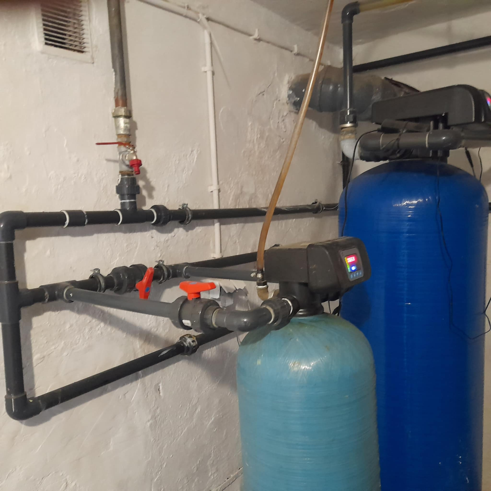
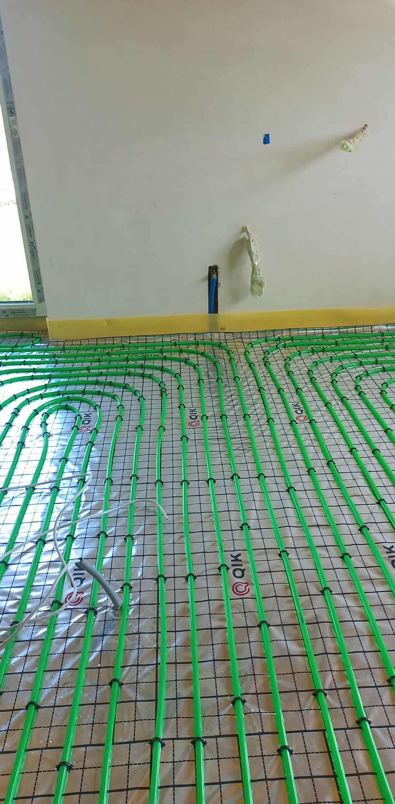
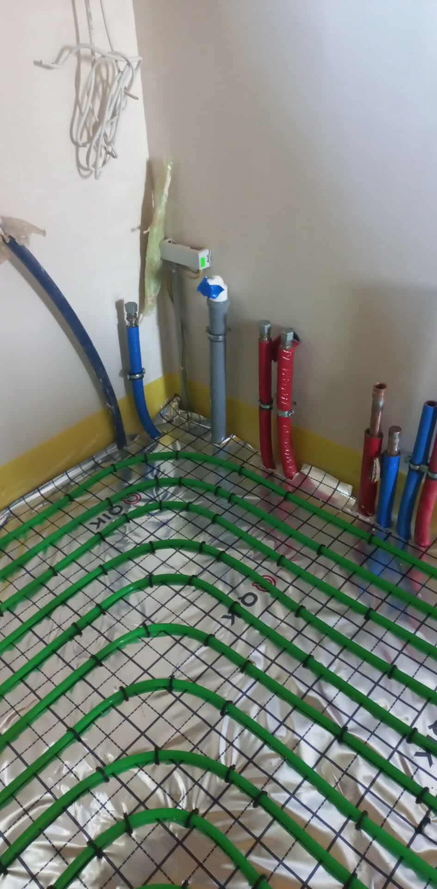
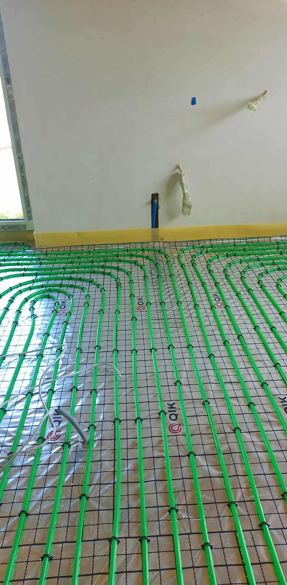
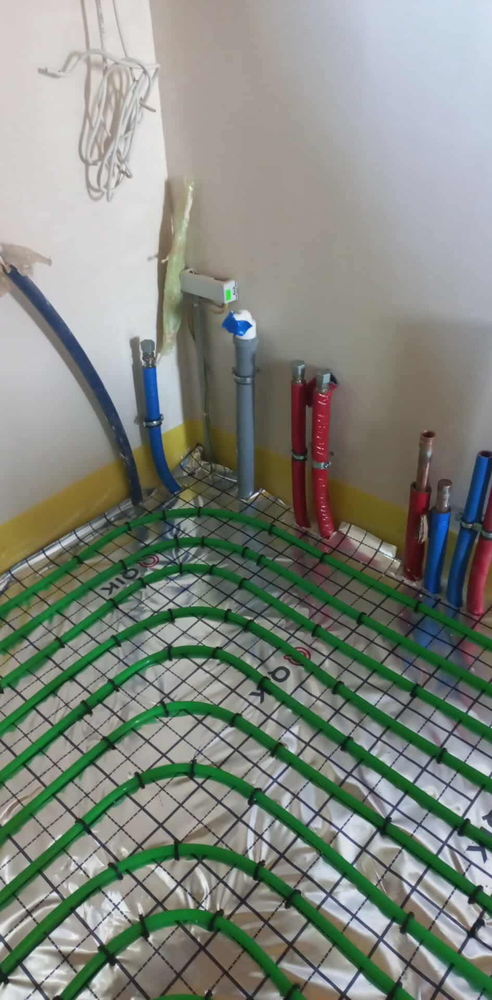
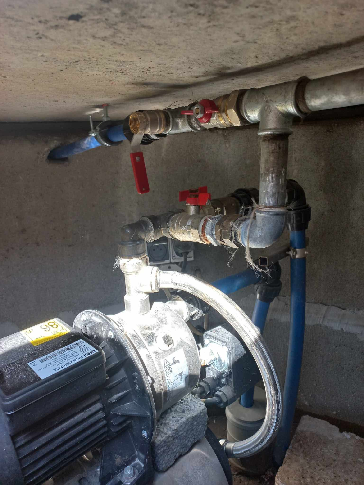
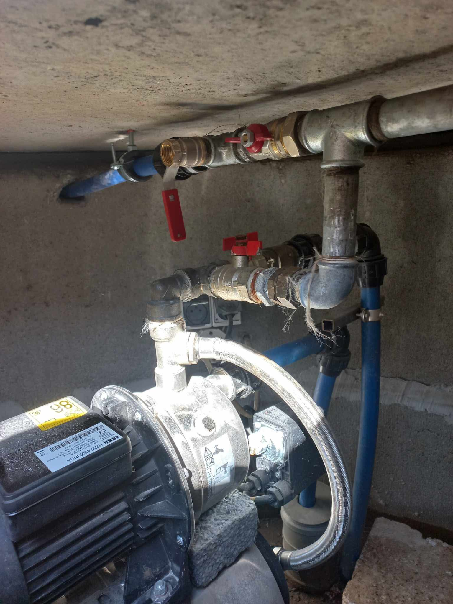
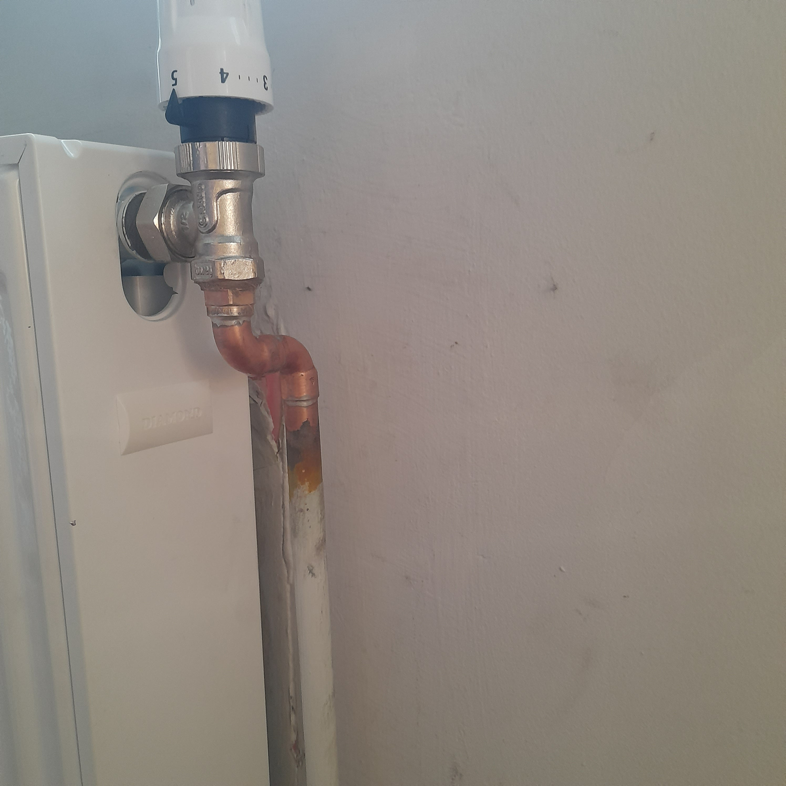
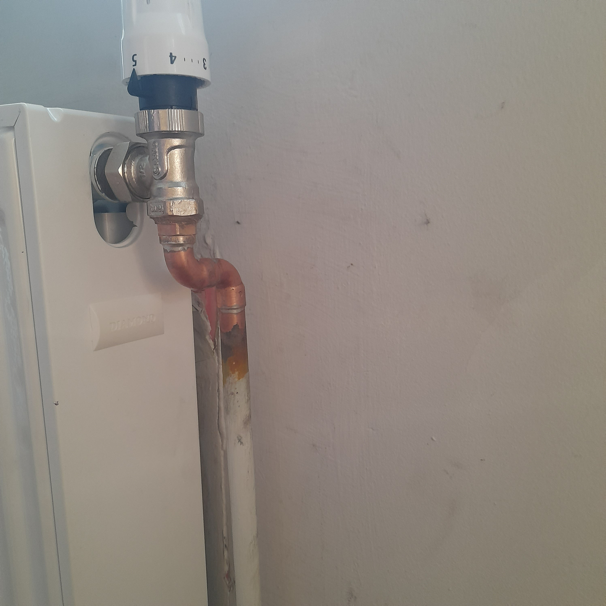

Modernizacja instalacji wodnej w hydroforni


Kompleksowa wymiana przestarzaej instalacji wodnej w hydroforni. Projekt obejmowa usunicie starych, uszkodzonych rur klejonych oraz montaż nowoczesnego systemu zgrzewanego.
- Wymiana rur klejonych na zgrzewane PP
- Montaż nowych zawor贸w kulowych
- Sprawdzenie szczelnoci instalacji
- Optymalizacja przepywu wody
 



 



 
